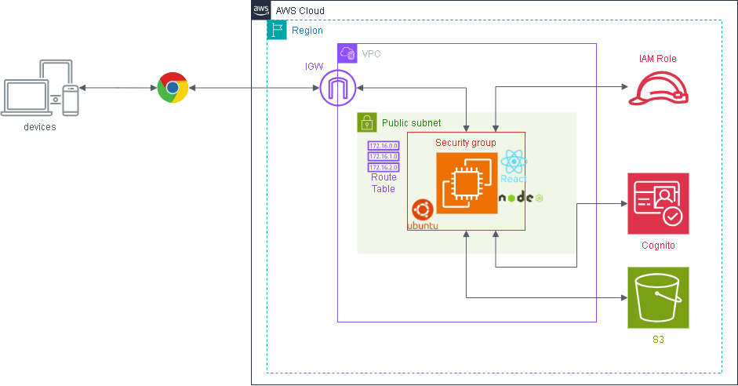

Cognito セットアップ手順（Phase 2 ハンズオン）¶
作成日: 2026-05-09 更新日: 2026-05-10（環境イメージ・AWS用語集を追加）
対象: AWS未経験者向けハンズオン（2回目）
完成後イメージ¶


環境イメージ¶
graph TB
User["👤 ユーザー\n（ブラウザ）"]
subgraph AWS["AWS クラウド (ap-northeast-1)"]
Cognito["🔐 Amazon Cognito\nhandson-user-pool\n（認証サーバー）"]
subgraph VPC["VPC: handson-vpc (10.0.0.0/16)"]
subgraph Subnet["パブリックサブネット: handson-public-subnet"]
subgraph EC2Box["EC2インスタンス (Ubuntu 24.04 / t2.micro)"]
FE["React フロントエンド\n(ビルド済み静的ファイル)"]
BE["Node.js + Express バックエンド\n(ポート 3000)"]
FE -->|"画面操作 → APIリクエスト\n+ Authorization: Bearer [JWT]"| BE
end
end
end
IAM["IAMロール\nhandson-ec2-role"]
S3["🪣 S3 バケット\nhandson-[名前]-files"]
IAM -.->|アタッチ| EC2Box
BE -->|"AWS SDK v3\nファイルの読み書き"| S3
BE -->|"JWKS エンドポイントで\n公開鍵を取得・JWT検証"| Cognito
end
User -->|"① email + password でログイン"| Cognito
Cognito -->|"② JWT トークンを発行"| User
User -->|"③ JWT付きで HTTP :3000 にアクセス"| EC2Box
ゴール¶
ログインしたユーザーだけがS3ファイル管理アプリを使えるようにする。
全体の流れ¶
[1] Cognitoユーザープール作成
↓
[2] 作成後の情報をメモする
↓
[3] フロントエンドの .env 設定
↓
[4] バックエンドの .env 設定
↓
[5] EC2でアプリを更新・起動
↓
[6] ブラウザで動作確認（登録→確認→ログイン）
AWS 用語集（手順を始める前に読んでおこう）¶
Phase 1 の用語集に加えて、Phase 2 で新たに登場する言葉を解説する。
認証と認可¶
認証（Authentication）¶
「あなたは誰ですか？」を確認すること。 メールアドレスとパスワードでログインする行為がこれにあたる。 「AuthN」と略されることもある。
認可（Authorization）¶
「あなたはこの操作をしていいですか？」を確認すること。 ログイン済みのユーザーだけがファイル操作できる、という制御がこれにあたる。 「AuthZ」と略されることもある。
Amazon Cognito¶
Amazon Cognito¶
AWS が提供するユーザー認証サービス。 「ユーザーの登録・ログイン・パスワード管理」を全部まかせられる。 自前で認証の仕組みを作ると大変なので、Cognito に任せることで安全に素早く実装できる。
自前実装の場合:
パスワードのハッシュ化・保存・検証
確認コードのメール送信
セッション管理 ...すべて自分で作る必要がある
Cognito を使う場合:
ユーザープールを作るだけで上記がすべてできる
無料枠: 月5万 MAU（Monthly Active Users）まで無料。
ユーザープール（User Pool）¶
Cognito の中にある「ユーザーのデータベース」。
誰が登録しているか、パスワードポリシーはどうするか、などを管理する箱。
今回は handson-user-pool という名前で作成する。
アプリクライアント（App Client）¶
ユーザープールに「このアプリからアクセスしますよ」と登録する設定。
クライアントID（Client ID）が発行され、フロントエンドはこれを使って Cognito と通信する。
今回は handson-app-client という名前で作成する。
クライアントシークレットは「なし」にすること ブラウザで動くSPAはシークレットを安全に保管できないため、シークレットなしを選ぶ。 シークレットありにするとフロントエンドからのログインが動作しない。
ユーザープールID¶
Cognito のユーザープールを識別するID。
ap-northeast-1_AbCdEfGhI のような形式。
バックエンドがJWT検証に使う。
クライアントID¶
アプリクライアントを識別するID。
1abc2def3ghi4jkl5mno6pqr のような形式。
フロントエンドが Cognito に接続するときに使う。
MAU（Monthly Active Users）¶
月間アクティブユーザー数。Cognito の料金計算の単位。
JWT（JSON Web Token）¶
JWT（ジェイダブリューティー）¶
ログイン成功後に Cognito が発行する「デジタル証明書」のようなもの。 「このユーザーは確かにログイン済みである」という事実を、改ざんできない形でまとめたテキスト。
JWT の構造（3つのパーツをピリオドで区切ったテキスト）:
eyJhbGciOiJSUzI1NiJ9.eyJzdWIiOiJ1c2VyMTIzIiwiZW1haWwiOiJ0ZXN0QGV4YW1wbGUuY29tIn0.署名
ヘッダー ペイロード（中身） 署名
（アルゴリズム） （ユーザー情報・有効期限など） （Cognitoの秘密鍵で署名）
バックエンドは Cognito の公開鍵でこの署名を検証することで、「本物の Cognito が発行したトークンか」を確認できる。
idToken¶
Cognito が発行する JWT のうち、ユーザーの情報（メールアドレスなど）が入ったもの。 今回のアプリはこれをバックエンドに送って認証する。
Bearer トークン¶
HTTP リクエストのヘッダーに JWT を付ける方法。
フロントエンドは API リクエストのたびにこのヘッダーを付ける。 バックエンドはこのヘッダーを読んでトークンを検証する。
JWKS（JSON Web Key Set）¶
Cognito が公開している「公開鍵の一覧」。 バックエンドはここから公開鍵を取得し、JWT の署名を検証する。
コード関連（Phase 2 で追加されるもの）¶
amazon-cognito-identity-js¶
Cognito のサインイン・サインアップなどをブラウザから呼び出すための npm ライブラリ。 今回のフロントエンドはこれを使って Cognito と通信する。
React Context（コンテキスト）¶
React アプリ全体でデータを共有する仕組み。 今回は「ログイン済みかどうか」「現在のユーザー情報」をアプリ全体で使えるようにするために使っている。
AuthContext（認証状態を管理）
├── isLoggedIn: true/false
├── userEmail: "test@example.com"
└── refreshSession()
↑
LoginPage・App・FileList などすべてのコンポーネントから参照できる
jwks-rsa¶
バックエンド（Node.js）で Cognito の JWKS エンドポイントから公開鍵を取得するライブラリ。 JWT の署名検証に使う。
jsonwebtoken¶
バックエンド（Node.js）で JWT を検証するライブラリ。
jwks-rsa で取得した公開鍵を使って、受け取ったトークンの署名・有効期限を確認する。
[1] Cognitoユーザープール作成¶
- AWSマネジメントコンソール → 「Cognito」を開く
- 「ユーザープールを作成」をクリック
ステップ1：アプリケーションを定義¶
画面上部に表示されるウィザードの最初のステップ。
アプリケーションタイプ - シングルページアプリケーション (SPA) を選択 ← ReactアプリはSPAなのでこれを選ぶ
アプリケーションに名前を付ける
- 名前: handson-app-client
サインイン識別子のオプション - メールアドレス にチェック ← メールアドレスでログインできるようにする
ソーシャル、SAML、または OIDC サインインを設定しますか? - 何も設定しない（スキップ）
自己登録 - 「自己登録を有効化」にチェックを入れる ← ユーザーが自分でアカウントを作れるようにする
サインアップのための必須属性 - 追加設定なし（メールアドレスのみで十分）
リターン URL（オプション） - 入力しない（今回はホストされたUIを使わないため不要）
「次へ」をクリック
ステップ2：セキュリティ要件を設定（パスワードポリシー・MFA）¶
パスワードポリシー - デフォルトのまま（8文字以上・大文字・小文字・数字・記号を含む）
Multi-factor authentication (MFA) - 「MFAなし」 を選択 ← ハンズオンなのでシンプルにする
ユーザーアカウントの復元 - デフォルトのまま
「次へ」をクリック
ステップ3：サインアップエクスペリエンスを設定¶
自己登録確認 - Cognitoが確認コードを送信してメールアドレスを検証する → デフォルトのまま
属性検証とユーザーアカウントの確認 - デフォルトのまま
必須属性（追加） - 何も追加しない
「次へ」をクリック
ステップ4：メッセージ配信を設定¶
メールプロバイダー - 「Cognitoで送信」 を選択（デフォルト） ← 無料枠で使えるCognito標準のメール送信
「次へ」をクリック
ステップ5：アプリを統合（ユーザープール名・ドメイン）¶
ユーザープール名
- 名前: handson-user-pool
ホストされたUI - 設定しない（今回はカスタムUIを使うため）
ドメイン - 設定しない
「次へ」をクリック
ステップ6：確認して作成¶
設定内容を確認し、「ユーザープールを作成」をクリック
[2] 作成後の情報をメモする¶
ユーザープールの詳細画面で以下をメモ:
| 項目 | 場所 | 例 |
|---|---|---|
| ユーザープールID | 「概要」タブ | ap-northeast-1_AbCdEfGhI |
| クライアントID | 「アプリの統合」タブ → アプリクライアントのリスト | 1abc2def3ghi4jkl5mno6pqr |
[3] フロントエンドの .env 設定¶
まず EC2 に SSH 接続し、root に切り替えて最新コードを取得する:
実行場所: ~/samurai-repo/phase02/frontend
以下のように書き換える:
VITE_COGNITO_USER_POOL_ID=ap-northeast-1_xxxxxxxx ← メモしたユーザープールID
VITE_COGNITO_CLIENT_ID=xxxxxxxxxxxxxxxxxxxxxxxxxx ← メモしたクライアントID
保存して終了: Ctrl + O → Enter → Ctrl + X
[4] バックエンドの .env 設定¶
実行場所: ~/samurai-repo/phase02/backend
以下のように書き換える（S3バケット名は Phase 1 と同じ）:
S3_BUCKET_NAME=handson-yamada-files
COGNITO_USER_POOL_ID=ap-northeast-1_xxxxxxxx ← メモしたユーザープールID
COGNITO_CLIENT_ID=xxxxxxxxxxxxxxxxxxxxxxxxxx ← メモしたクライアントID（バックエンドでは使用しないが記録として）
保存して終了: Ctrl + O → Enter → Ctrl + X
[5] EC2でアプリを更新・起動¶
実行場所: ~/samurai-repo（[3] の続き。すでに root かつ git pull 済みの前提）
cd ~/samurai-repo
# フロントエンドをビルド
cd phase02/frontend
npm install
npm run build
# バックエンドをセットアップ・起動
cd ../backend
npm install
npm run build
npm start
以下のように表示されれば起動成功:
[6] ブラウザで動作確認¶
ブラウザで以下にアクセス:
動作確認チェックリスト¶
新規登録フロー:
- [ ] ログイン画面が表示される
- [ ] 「新規登録」タブをクリックできる
- [ ] メールアドレス・パスワードを入力して「登録する」を押すと確認コード入力画面になる
- パスワードは 8文字以上・大文字・小文字・数字・記号（例: !@#$） を含むこと
- [ ] 登録したメールに6桁のコードが届く
- [ ] コードを入力すると自動的にログインされてアプリ画面に遷移する
ログインフロー: - [ ] ログアウトボタンを押すとログイン画面に戻る - [ ] 登録したメール・パスワードでログインできる - [ ] ヘッダーにメールアドレスが表示される
認証後の操作: - [ ] Phase 1 と同様にファイルのアップロード・一覧・ダウンロード・削除ができる - [ ] ログアウト後にファイル一覧を取得しようとすると「401 認証が必要です」が返る（ブラウザの開発者ツールで確認）
トラブルシューティング¶
ログイン後に「ファイル一覧の取得に失敗しました」と表示される¶
バックエンドの .env に COGNITO_USER_POOL_ID が設定されていないか間違っている。
で内容を確認し、正しいユーザープールIDを設定する。
「クライアントシークレットが必要です」系のエラーが出る¶
Cognito アプリクライアントを作成する際に「クライアントシークレットを生成する」にチェックが入っている。
→ アプリクライアントを削除して「シークレットなし」で作り直す。
パスワードが要件を満たしているのにエラーになる¶
Cognito のデフォルトポリシーは 記号（!@#$ など）も必須。 以下のすべてを含むパスワードを使うこと。
| 要件 | 例 |
|---|---|
| 8文字以上 | ✅ |
| 大文字を含む | H |
| 小文字を含む | andson |
| 数字を含む | 1 |
| 記号を含む | ! |
例: Handson1!
メール確認コードが届かない¶
- 迷惑メールフォルダを確認する
- Cognito の送信元は
no-reply@verificationemail.com - 5分以上経っても届かない場合は再度サインアップを試す
仕組みの説明（学習者向け）¶
sequenceDiagram
participant B as ブラウザ
participant C as Cognito
participant E as EC2バックエンド
participant S as S3
B->>C: ① email + password でサインイン
C-->>B: ② JWT（idToken）を発行
B->>E: ③ GET /api/files<br/>Authorization: Bearer [JWT]
E->>C: ④ JWKS エンドポイントから公開鍵を取得
C-->>E: ⑤ 公開鍵を返す
E->>E: ⑥ 公開鍵でJWTの署名を検証
E->>S: ⑦ 検証成功 → S3からファイル一覧を取得
S-->>E: ⑧ ファイル一覧
E-->>B: ⑨ ファイル一覧を返すJWT（JSON Web Token） とは何か: - ユーザーが本当にログイン済みであることを証明するデジタル証明書のようなもの - Cognito が秘密鍵で署名し、バックエンドが Cognito の公開鍵（JWKS）で検証する - 有効期限（デフォルト1時間）が切れると再ログインが必要になる - バックエンドは Cognito に問い合わせなくても、公開鍵があれば検証できる
ハンズオン終了時の注意¶
EC2を停止する手順は Phase 1 と同じ。Cognito は停止不要（無料枠：月5万MAUまで無料）。